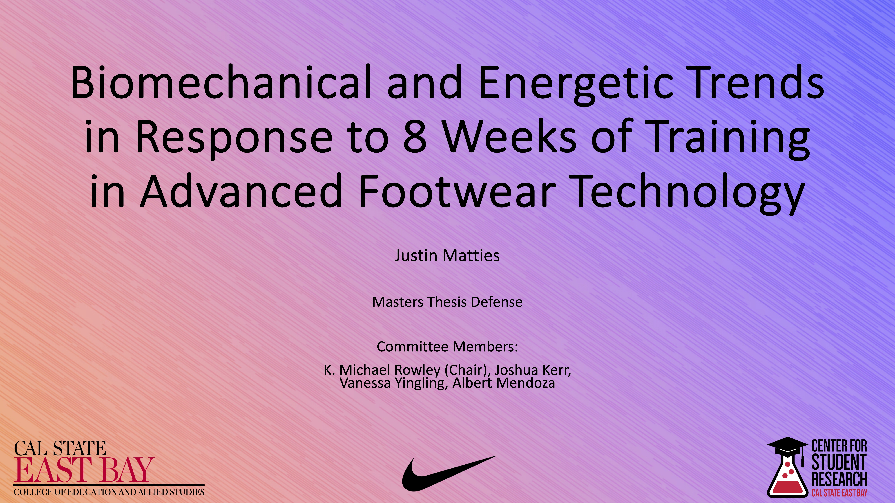

Featured Project
Advanced Footwear Technology Training Study
A central line of work exploring biomechanical and energetic trends following extended exposure to advanced footwear technology. This project can anchor your portfolio because it connects movement analysis, intervention design, and practical translation.
